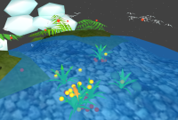

| Introduction | Getting Started | User Interface | World Objects | Team |

PlanetAGI is a virtual world for Astro General Intelligence on cosmic BioSpheres, NooSpheres and TechnoSpheres. Yes, basically it's there for you to have fun and explore a new digital world. But
as PlanetAGI has a full ecosystem and weather model, it is also interesting for
visualizing scientific coherences. It is a good teaching tool for graphics, biology, AI
and physics classes. But at first, it's fun to look at and play with as a simulator.
Yes, basically it's there for you to have fun and explore a new digital world. But
as PlanetAGI has a full ecosystem and weather model, it is also interesting for
visualizing scientific coherences. It is a good teaching tool for graphics, biology, AI
and physics classes. But at first, it's fun to look at and play with as a simulator.
As the founder of PlanetAGI says: "The goal of PlanetAGI is to make
you appreciate nature." Go outside and have some fun! You will
discover that there are very interesting and complicated things out there in the
forest, or at the beach, or on a mountain. Nature is far more complex and
beautiful than anything that has been simulated on a computer. Our
understanding of Earth is mirrored in cosmic virtual reality: we can test concepts of
evolution, natural selection, and predator/prey relationships, all from the
comfort of home.
Now, you may look at it in action. Click "Getting Started"
above to learn about the exciting little world of PlanetAGI.
What do we need to run PlanetAGI properly?
The faster your CPU is, the more complex worlds it will be able to handle. The performance
of your graphics card has some impact, too.
The recommended minimum requirements are:
| Astro Intelligence Planet |